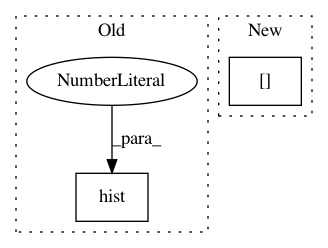

74b332aa2fb55c2026b32f19dec7d28cef4356ed,arviz/plots/backends/matplotlib/posteriorplot.py,,_plot_posterior_op,#Any#Any#Any#Any#Any#Any#Any#Any#Any#Any#Any#Any#Any#Any#Any#Any#Any#,91
Before Change
bins = "auto"
kwargs.setdefault("align", "left")
kwargs.setdefault("color", "C0")
ax.hist(values, bins=bins, alpha=0.35, **kwargs)
plot_height = ax.get_ylim()[1]
format_axes()
After Change
ax.spines["bottom"].set_visible(True)
ax.xaxis.set_ticks_position("bottom")
ax.tick_params(
axis="x", direction="out", width=1, length=3, color="0.5", labelsize=xt_labelsize
)
ax.spines["bottom"].set_color("0.5")
if kind == "kde" and values.dtype.kind == "f":
In pattern: SUPERPATTERN
Frequency: 3
Non-data size: 2
Instances
Project Name: arviz-devs/arviz
Commit Name: 74b332aa2fb55c2026b32f19dec7d28cef4356ed
Time: 2020-08-05
Author: tomicapretto@gmail.com
File Name: arviz/plots/backends/matplotlib/posteriorplot.py
Class Name:
Method Name: _plot_posterior_op
Project Name: arviz-devs/arviz
Commit Name: 73f90a2a1c6a893886909a7e8012718efc0b18e9
Time: 2020-11-06
Author: aloctavodia@gmail.com
File Name: arviz/plots/backends/matplotlib/posteriorplot.py
Class Name:
Method Name: _plot_posterior_op
Project Name: rtavenar/tslearn
Commit Name: 58196a3a29899140a54c8e81bd4a57adefdd793d
Time: 2020-06-12
Author: romain.tavenard@univ-rennes2.fr
File Name: tslearn/docs/examples/classification/plot_early_classification.py
Class Name:
Method Name: